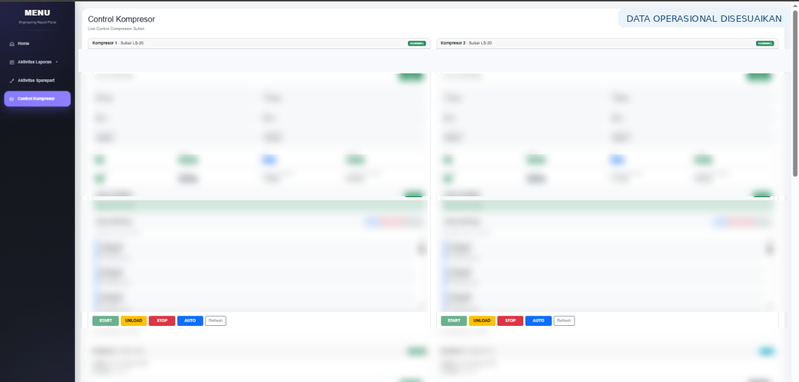
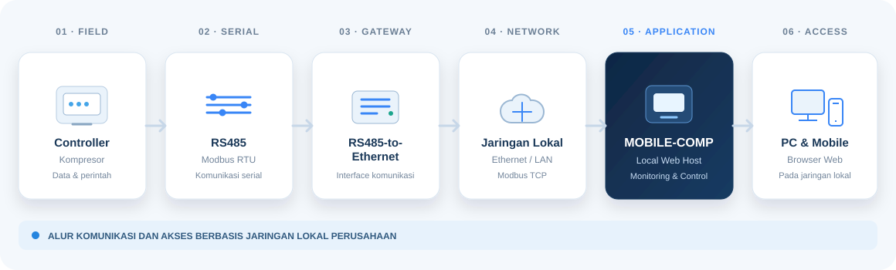

01
Monitoring Terpisah
Informasi kondisi mesin tersedia pada controller masing-masing unit, sehingga pemantauan keseluruhan belum terpusat.
MOBILE-COMP menyatukan pemantauan parameter operasi dan fungsi pengendalian kompresor melalui local web yang dapat diakses dari PC maupun perangkat mobile pada jaringan lokal perusahaan.

MOBILE-COMP (Mobile Control & Monitoring of Compressors) merupakan sistem berbasis local web yang dirancang untuk memusatkan pemantauan dan pengendalian kompresor.
Data dari controller kompresor diteruskan melalui komunikasi RS485-to-Ethernet ke jaringan lokal. Informasi operasional kemudian ditampilkan melalui dashboard yang dapat dibuka menggunakan browser pada PC maupun perangkat mobile yang terhubung ke jaringan tersebut.
Pengelolaan beberapa unit kompresor membutuhkan visibilitas data yang mudah diakses dan dipahami.
Informasi kondisi mesin tersedia pada controller masing-masing unit, sehingga pemantauan keseluruhan belum terpusat.
Personel perlu menuju lokasi kompresor untuk memeriksa parameter dan status operasi secara langsung.
Data yang belum terintegrasi membuat evaluasi pola operasi dan identifikasi kondisi abnormal menjadi kurang praktis.
MOBILE-COMP menggabungkan fungsi monitoring dan control untuk mendukung pemantauan kondisi serta pengelolaan operasi kompresor.
Pantau parameter tekanan P1/P2 dan temperatur T1/T2 untuk melihat kondisi operasi kompresor.
↗Lihat status mesin dan condition setiap unit yang telah terintegrasi pada sistem.
↗Amati counter waktu operasi dan waktu pembebanan untuk membantu evaluasi pola kerja.
↗Akses riwayat alarm untuk membantu personel meninjau kejadian dan kondisi abnormal.
↗Informasi dari beberapa kompresor yang terhubung dapat dilihat melalui satu antarmuka.
↗Jalankan fungsi Start, Unload, dan Stop melalui antarmuka sesuai dukungan controller.
↗Dukung pengaturan operasi otomatis melalui fungsi Auto Start dan Auto Stop.
↗Buka dashboard melalui browser pada PC atau perangkat mobile di jaringan lokal perusahaan.
↗Data controller diteruskan melalui interface komunikasi menuju MOBILE-COMP, lalu ditampilkan pada browser pengguna yang berada di jaringan lokal.

MOBILE-COMP dirancang untuk membantu personel memperoleh informasi operasional secara lebih praktis dan terstruktur.
Lihat bukti penerapan ↗Memusatkan data beberapa unit kompresor yang terhubung pada satu antarmuka monitoring.
Personel dapat melihat parameter dari perangkat yang terhubung ke jaringan lokal tanpa selalu mendatangi controller.
Akses status mesin dan riwayat alarm membantu proses identifikasi kondisi serta pengambilan keputusan.
Data Running Hours, Loading Hours, tekanan, dan status operasi dapat digunakan sebagai bahan evaluasi.
Integrasi dapat memanfaatkan jalur komunikasi yang tersedia pada controller setelah pemeriksaan kompatibilitas.
MOBILE-COMP telah diterapkan pada empat unit kompresor Sullair dalam studi implementasi yang didokumentasikan pada 2026.
Tampilan ini berasal dari dokumentasi implementasi MOBILE-COMP. Informasi operasional yang bersifat spesifik telah disamarkan untuk kebutuhan publikasi.
Penerapan pada tipe atau merek kompresor lain memerlukan pemeriksaan controller, protokol komunikasi, register mapping, jaringan, dan validasi fungsi. Pengoperasian tetap harus mengikuti kewenangan personel, SOP, serta ketentuan keselamatan di fasilitas masing-masing.
Solusi monitoring dan control berbasis local web untuk mendukung visibilitas operasional sistem kompresor.